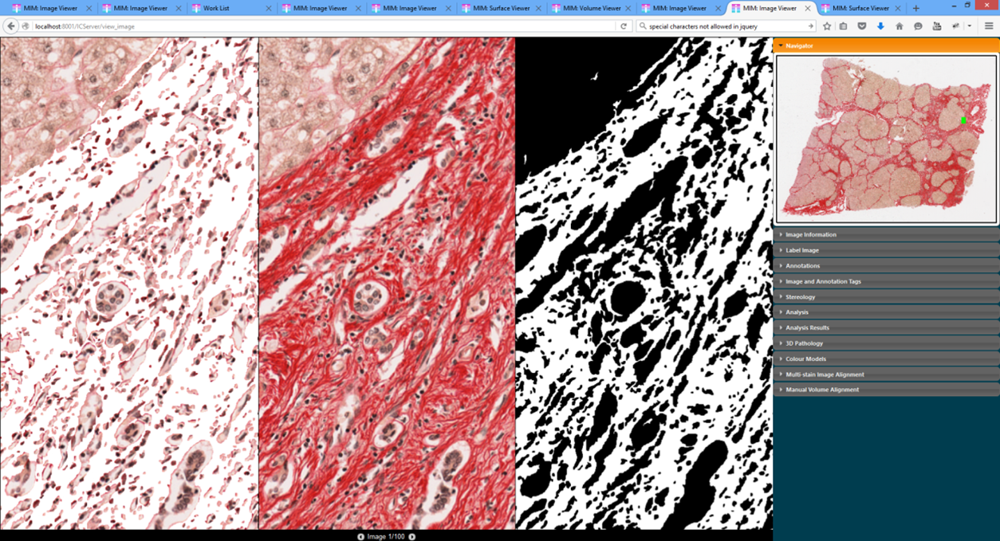

Tissue Quantification
Genius Tissue Quantification Overlay" />
HG-MIM Pro offers functionality for whole slide, colour based, quantification at up to native image resolution. Features include:
-
Calculation of tissue areas, area proportions, perimiter length, shape factor (shape complexity) for whole slide, and/or multiple annotated sub-regions (boxes, enclosed curves, or ellipses). Tissue areas may be disjoint and arbitrarily complex.
-
Specification of colour thresholds in RGB, HSV or Greyscale colour spaces.
-
Automatic calculation of colour thresholds based on annotated examples.
-
A configurable image processing chain (colour normalisation, filtering, morphology, small object removal, hole filling) is available for automatic quantification of noisy or variable images.
-
Generation of whole slide overlay images at up to native resolution (overlays can be arbitrarily large). Overlays may be viewed side by side with original data, overlayed with transparency or in a separate sub-viewer, or a combination of these (see above).
-
Full integration with HG-MIM report generation system.
-
See also the Deep learning add-on allowing automatic quantification using local appearance with Convolutional Neural Networks.